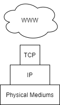
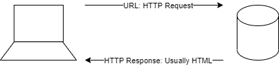
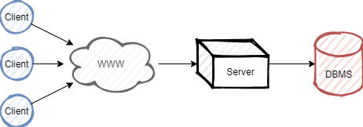
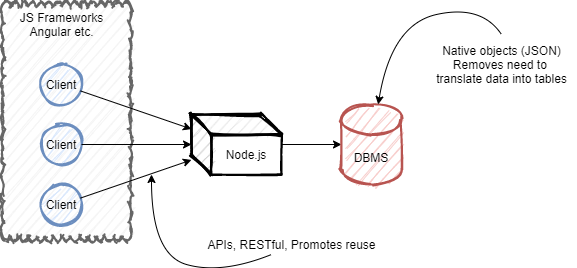
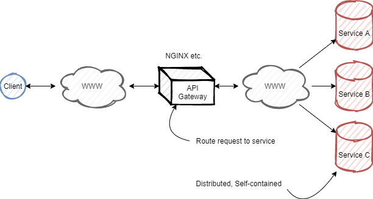

The World Wide Web
This topic covers the workings of the world wide web in the context of building web applications as a layer ontop of the internet. WWW is used in place of “World Wide Web”.
The Internet & The World Wide Web
The internet encompasses a connected network of computer systems, as well as the physical mediums used to transfer data - and the protocols in which to do so.
The WWW is first a layer of applications supported by the internet, sending the http protocol through the TCP and IP protocols. This forms a complex topological structure connecting many machines, containing a small number of hub nodes.

Simple Internet Protocols
The following is a short list of basic internet protocols
| Name | Description |
|---|---|
| TCP | End to end reliable messaging (ensuring complete delivery) |
| IP | Internet Protocol, used to provide addresses identifying resources. Used in the delivery of messages |
| DNS | Domain Name Server, used to translate domains to IP addresses. |
HTTP
Hyper Text Transfer Protocol
HTTP contains mulitple methods to send to a server, invoking different actions.

| Attribute | GET | POST |
|---|---|---|
| Description | Retrieves data from a URL | Sends data to a server |
| Size | Max length of URL: 2048 Characters | Unlimited |
| Type | ASCII | No restrictions |
| Security | Data can be accessed from URL | Data not included in URL |
| Caching | Yes | No |
POST encoding types:
application/x-www-form-urlencoded -> encodes data
multipart/form-data -> unencoded (binary)
HTML
Hyper Text Markup Language, the common document language of the WWW.
HTML is rendered in client-side technologies and is made of elements. The information enclosed by the element is known as it’s content.
\[Element = tag_{open} + content + tag_{close}\] \[Tag = < + name + (attribute = "value")... + >\]- An element with block will always start on a new line
- An element with inline will always start on the current line
Architectures
Web applications all contain a client aspect to display a page and usually execute Javascript as well. However when it comes to server-side logic there are differning architectures to deliver a service on the WWW.
Three-tier:

Javascript based:

Micro-services:
